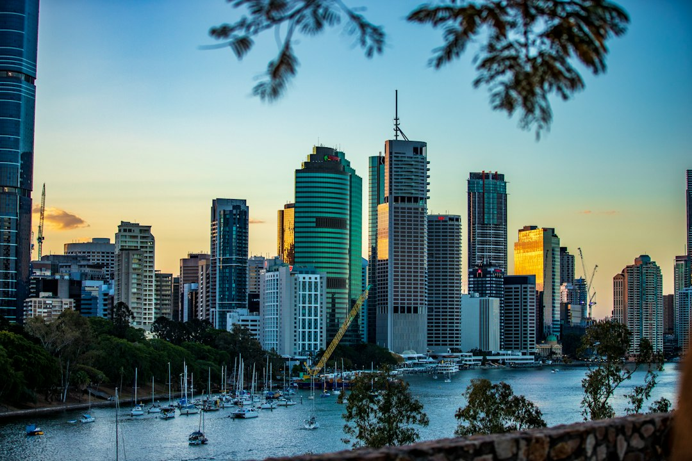

For Brisbane businesses comparing web design brisbane options, the useful starting point is not style alone, but the job the site must do, the budget range and the content needed before build.
Web Design Brisbane Explained
Web Design Brisbane Australia presents the core decision clearly: a site should be fast, mobile-first, search-ready and built around the customers a business wants to reach across Brisbane. That matters because a cafe, trade business, consultant, clinic or online store can all need different page structures even when the visual brief sounds similar.
The first scoping question is the commercial action the site must support. A brochure site may need trust, service clarity and an enquiry path. A landing page for Google Ads needs fewer distractions and a sharper conversion path. An online store needs product structure, speed and buyer confidence. A redesign has the extra task of modernising the site without carelessly losing existing search visibility.
Before asking for a quote, write down the pages you expect, the platform you prefer, who will supply copy and images, and whether you need ongoing care after launch. A tighter brief makes the estimate more useful and reduces the chance of comparing proposals that are solving different problems.
Budget Signals To Clarify Early
The published cost guidance separates smaller brochure websites from more polished lead-focused builds and from eCommerce or heavily custom work. That is a practical split, because the same five-page count can hide very different effort if the project also needs conversion planning, WordPress editing, WooCommerce or Shopify setup, landing page strategy or careful migration from an older site.
Ask each designer what is included in discovery, design, development, mobile checks, on-page SEO structure, launch support and training. Also ask what is excluded, such as copywriting, product entry, photography, care plans, extra integrations or post-launch changes. A lower starting figure may still be suitable for a simple local presence, but only if the inclusions match the outcome you need.
For another crawlable reference point on the same topic, see this Brisbane website planning guide. Keep the comparison focused on scope and ownership, not only on the headline figure.
Platform Choice And Ownership
The source page names custom web design, small business websites, WordPress builds, Shopify and WooCommerce stores, redesigns, landing pages, SEO-friendly builds, and website care. Those categories are useful because they map to how the business will operate the site after launch.
WordPress suits teams that want to update text, images and pages without having a developer on call. Shopify and WooCommerce are framed for online stores where speed, trust and conversion matter. A bespoke build can make sense when the business needs a strategy-led design around a specific customer journey. A landing page is different again, because it usually exists to support a campaign, launch or promotion.
Ownership should be discussed in plain terms. The source page says the website and domain stay yours, and that training can be provided if you want to update the site yourself. That is worth confirming in the proposal, along with administrator access, hosting responsibilities, backups, security updates and whether a care plan is optional or expected.
Timing Depends On Feedback And Content
The published timeline ranges are broad for a reason. A simple brochure site is commonly around 4 to 10 weeks. A WordPress or small business site is commonly around 6 to 10 weeks. An eCommerce or custom build can start from about 12 weeks and extend to several months. The largest variable named on the source page is how quickly content and feedback come back.
That means timing is not only a developer question. The business also needs to supply service details, page priorities, images, product information, approvals and feedback at agreed stages. If several people must approve the site, name that group early and decide who has final sign-off.
- For a new small site, prepare service pages and enquiry goals before design begins.
- For a redesign, identify pages that already attract enquiries or rankings before changing structure.
- For an online store, prepare product categories, shipping information and trust content before build.
- For a campaign page, decide the single action the visitor should take.
Who This Applies To
This guide is most useful for Brisbane and South East Queensland businesses that need a new website, a redesign, a WordPress site they can edit, or an eCommerce store built on Shopify or WooCommerce. It also applies to owners planning a lead-generation landing page for Google Ads, launches or promotions.
Local context is relevant when the website has to sell into different parts of Brisbane with different customer expectations. The source page gives examples from the CBD and inner-city areas such as Fortitude Valley, Newstead and West End through to Toowong, Indooroopilly, Chermside, Carindale and Sunnybank. Use those place references to shape service copy only where they reflect real customers, service areas or project examples.
Search performance should be treated carefully. A well-built site can have clean markup, fast load times and sensible on-page SEO, but the source page also notes that ongoing ranking results depend on competition and content, and that no one can honestly guarantee a specific position under Australian Consumer Law.
- Define the outcome. Write the main commercial action the site must support, such as enquiries, product sales, campaign leads or easier self-management.
- Choose the likely platform. Shortlist whether the project sounds like WordPress, Shopify, WooCommerce, a custom build, a landing page or a redesign.
- Prepare content inputs. Gather service details, images, product information, existing page priorities and decision-makers before requesting a quote.
- Compare inclusions. Check design, development, mobile readiness, SEO foundations, training, launch support and care plan options line by line.
| Project type | Best fit | Key question |
|---|---|---|
| Small brochure site | A clear local presence with service pages and enquiry paths | What pages, copy and images are included? |
| WordPress build | A site the owner or team can update | What training and editor access are provided? |
| Shopify or WooCommerce store | Online selling with product structure and trust signals | Who handles product content, shipping details and launch checks? |
| Website redesign | Modernising an ageing or underperforming site | How will existing rankings and useful pages be protected? |
This guide covers practical planning, budget, timing, platform and ownership questions for Brisbane business website projects.